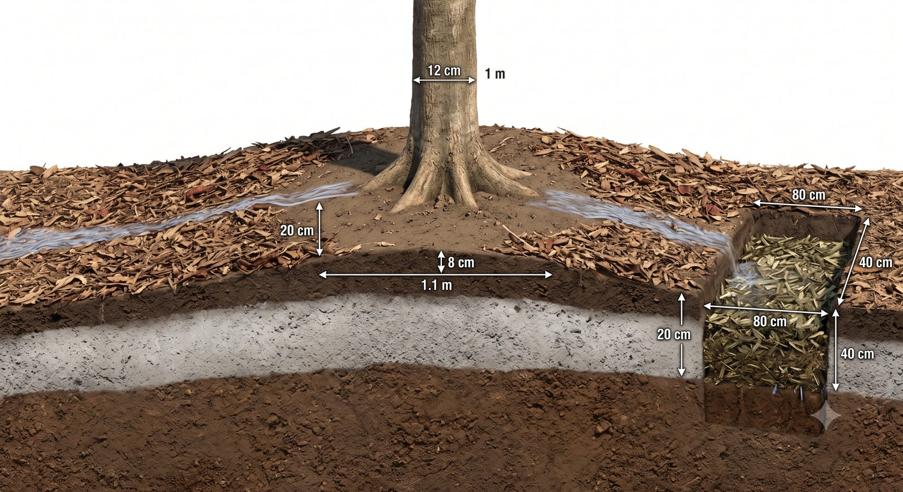

⚡ Ringkas — Vonis & Peringkat
Rekomendasi Adnan/BRIN SELARAS dengan SOP (organik + K + NPK-tepat, tanpa pengapuran). Strategi 2-fase Wakif valid secara ilmiah. Solusi terbaik = kombinasi bertahap, bukan satu opsi tunggal. Semen ditolak.
Kombinasi optimal: D (base) → C + KCl + benam pangkasan (targeted) → A opsional. Butuh keputusan struktural baru: ADR-027.
Kondisi Tanah Kebun — Titik Tolak
Uji cepat 16 Jun 2026 (Robusta, Kab. Malang, Jatim). Tiga unsur rendah + bahan organik rendah, tapi pH sudah ideal. Ini kunci seluruh kajian.
⚠️ Catatan data: metadata koordinat di lembar uji = placeholder (123) & kecamatan tertulis "Kepanjen". Nilai N/P/K/pH tetap dipakai, tapi pastikan sampel memang dari kebun Ngantang saat arsip resmi.
Kendala yang Tidak Terbaca Uji Tanah — Kerak Abu Kelud
Uji tanah mengukur kimia: berapa N, K, P, dan pH. Ia tidak mengukur fisika — apakah akar bisa bernapas, apakah air bisa meresap, apakah pupuk yang ditabur benar-benar sampai ke akar. Di kebun ini justru di situ letak persoalannya, dan bagian ini ditambahkan 1 Agustus 2026 setelah dua koreksi besar dari lapangan.
| Asumsi lama | Kenyataan | Sumber koreksi |
|---|---|---|
| Kebun berada di lereng gunung, risiko utamanya erosi | Kebun DATAR. K3 datar penuh; K1, K2, K4 dominan datar dengan sebagian terasering 1–3 sap yang tiap sapnya rata. Risiko utamanya genangan, bukan erosi | Koreksi langsung Wakif, 31 Juli 2026 |
| Tanah kebun Andisol pH 5,0–5,5, masam | pH terukur 6,2 — ideal. Lembar uji sendiri berbunyi "tidak diperlukan pengapuran" | Uji tanah 16 Juni 2026 (bagian 1 halaman ini) |
Apa yang ditinggalkan letusan Kelud 2014
Kawasan Ngantang menerima endapan abu vulkanik 10–20 cm pada letusan Februari 2014. Sebagian sudah bercampur dan tercuci; sisanya mengeras di permukaan. Tiga sifat abu itulah yang menjadi persoalan:
| Sifat abu | Akibatnya | Kenapa berbahaya di lahan DATAR |
|---|---|---|
| Mengeras jadi kerak | Lapisan padat yang menutup pori tanah | Pertukaran udara ke akar terputus. Kopi berakar dangkal — hampir seluruh akar penyerapnya ada di 10–30 cm teratas, persis di bawah kerak ini |
| Menolak air (hidrofobik) | Air hujan tidak meresap, hanya menggenang di atasnya | Di lereng air akan pergi. Di lahan datar ia tinggal — dan genangan berkepanjangan adalah kondisi ideal bagi patogen akar |
| Menimbun leher akar | Pangkal batang yang seharusnya terlihat jadi terkubur | Kulit pangkal batang yang terus lembap adalah pintu masuk busuk leher |
🔬 Hipotesis yang belum diuji: busuk akar pada K3-P01 mungkin berasal dari gabungan tunggak lama sebagai sumber penularan + genangan sebagai kondisinya. Keduanya bisa berlaku bersamaan.
Bentuk permukaan tanah yang benar — dan yang salah
Ukuran penataan permukaan — versi BENAR
| Bagian | Ukuran | Patokan tanpa meteran |
|---|---|---|
| Ø piringan | ± 2,2 m (jari-jari 1,1 m) | tiga langkah biasa menyeberang |
| Beda tinggi batang → tepi | 8 cm, turun terus ke luar | empat jari dirapatkan |
| Leher batang dikosongkan | Ø 40 cm, bersih total | dua jengkal |
| Tanah penutup akar | 2–3 cm | satu ruas jari telunjuk |
| Kompos kambing | ± 1 cm, pita selebar 20 cm di tepi tajuk | setebal kelingking · pita satu jengkal |
| Mulsa | 5–10 cm, berhenti 20 cm dari batang | dua sampai empat ruas jari |
| Rorak | 80 × 40 × 40 cm | dua jengkal dalam |
| Alur antar-baris | 35 cm lebar × 20 cm dalam | satu jengkal dalam |
| Guludan | pita 1,8 m, naik 5 cm | — |
| Lapisan abu Kelud | ± 20 cm (skenario) | satu jengkal |
| 🚧 Batas keras: total bahan PADAT (tanah + kompos) tidak lebih dari 5 cm sekali kerja | ||
Yang paling berbahaya adalah parit melingkar penuh di leher batang: air terkurung tepat menempel di pangkal batang — jalan tercepat menuju busuk leher.
 1
2
3
4
1
2
3
4
- Pangkal batang berdiri di TANAH KOSONG — tidak ada mulsa, tidak ada kompos, tidak ada timbunan tanah yang menempel kulit batang
- Telapak tangan muat di cincin kosong itu — inilah ukurannya. Kalau tangan tidak muat, mulsanya terlalu masuk ke dalam
- Mulsa berbentuk CINCIN seperti donat, berhenti satu jengkal sebelum batang. Bukan hamparan rata yang menutup semuanya
- Akar halus putih terlihat di muka potongan — akar kopi menjalar mendatar tepat di bawah permukaan, itu sebabnya lapisan di atasnya harus tipis dan berongga
Lalu bahannya ditaruh di mana
 1
2
3
4
1
2
3
4
- Pita RATA & TIPIS — selebar satu jengkal (20 cm), setebal kelingking (± 1 cm). Bukan gundukan, bukan disebar rata ke seluruh permukaan
- Satu ember biasa (± 10 liter) = satu pohon. Tidak perlu menimbang apa pun
- Tanah antara pita dan batang KOSONG — pita duduk di garis tetesan tajuk, tempat akar penyerap bekerja
- Langsung ditutup mulsa. Di gambar ini separuh pita sudah tertutup selimut daun kering, separuh lagi masih terbuka — begitu selesai menaruh, langsung tutup supaya tidak kering dan tidak hanyut
 1
2
3
4
1
2
3
4
- Alur kanan MASIH TERBUKA — butiran hanya di dasar alur. Tidak satu butir pun di tanah rata, di mulsa, atau menempel batang. Di atas mulsa butiran tak pernah sampai ke akar; menempel batang, ia membakar kulit
- Alur kiri SUDAH DITUTUP tanah — tidak ada butiran terlihat lagi. Pupuk yang dibiarkan terbuka menguap dan hanyut, jadi tutup begitu selesai menabur
- DUA alur pendek TERPISAH, ada tanah utuh lebar di antara ujung-ujungnya. Jangan pernah disambung jadi lingkaran penuh — di lahan datar itu mengurung air keliling pohon
- Alur jauh dari batang, di garis tetesan tajuk — sama seperti pita kompos. Cincin keliling batang tetap bersih
 1
2
3
4
1
2
3
4
- Batang di titik TERENDAH — inilah kesalahan pokoknya
- Air mengurung batang — kulit pangkal terus basah = jalan masuk busuk leher
- Gundukan tepi — dimaksudkan menahan air, di lahan datar justru jadi bendungan
- Lapisan abu pucat ± 20 cm di atas tanah cokelat — kerak inilah yang menolak air

1 2 3 4 RALAT: mulsa 5–10 cm RALAT: rorak dalam 40 cm- Leher akar terbuka — pangkal yang melebar harus terlihat. Cincin Ø 40 cm (dua jengkal) di sekelilingnya bersih total
- Permukaan turun terus ke luar — beda tinggi ± 8 cm sepanjang 1,1 m. Landai, tapi jelas menjauh dari batang
- Rorak 80 × 40 × 40 cm — diisi residu, menembus lapisan abu pucat sampai tanah cokelat di bawahnya
- Lapisan abu ± 20 cm — terlihat sebagai pita pucat. Rorak sengaja dipotong menembusnya
⚠️ DUA angka di gambar ini salah — jangan diikuti: (1) label mulsa tertulis 20 cm, yang benar 5–10 cm — dan mulsanya memang digambar terlalu tebal, bukan cuma salah label. (2) kedalaman rorak digambar 40 + 40 = 80 cm, padahal patokannya 40 cm saja — roraknya harus dua kali lebih lebar daripada dalam, palung lebar bukan sumur. Angka lain (8 cm · 1,1 m · rorak lebar 80 cm · pita abu 20 cm) sudah sesuai. Gambar pengganti sedang dibuat.
Ujinya satu ember, tanpa alat apa pun: siram ± 1 liter air di pangkal batang. Habis dalam kurang dari 1 menit = bentuknya sudah benar. Masih menggenang = keruk lagi ke arah luar sampai airnya lari.
Berapa tebal boleh menutup akar — angka yang mengikat
Diukur dari permukaan akar yang tampak, bukan dari permukaan abu. Ini yang menentukan bagaimana kompos kambing dan sekam bakar di bagian 7 benar-benar ditaruh di lapangan.
| Lapisan | Tebal | Patokan tanpa meteran | Catatan |
|---|---|---|---|
| Di leher batang | 0 cm | lingkaran Ø 40 cm = dua jengkal | Kosong selamanya. Bukan tanah, bukan kompos, bukan mulsa |
| Tanah penutup | 2–3 cm | satu ruas jari telunjuk | Sekadar supaya akar tidak telanjang kena matahari |
| Kompos kambing | ± 1 cm | setebal jari kelingking | Sebagai pita selebar 20 cm (satu jengkal) di garis tetesan tajuk — bukan disebar rata |
| Sekam bakar | tipis, dicampur | — | Dicampur ke tanah lapisan atas, bukan ditumpuk. Dosisnya moderat karena sifatnya agak alkali (lihat bagian 9) |
| Mulsa | 5–10 cm | dua sampai empat ruas jari | Memampat jadi ± 5 cm. Berhenti 20 cm (satu jengkal) dari batang |
| 🚧 Batas keras: total bahan PADAT (tanah + kompos) tidak lebih dari 5 cm sekali kerja. | |||
Mulsa berbeda karena berongga — udara dan air tetap lewat di sela ranting dan daun. Karena itu mulsa boleh 10 cm dan kompos tidak.
Dan kalau setelah ditutup 2–3 cm masih ada akar yang terlihat: biarkan. Kopi memang berakar dangkal; akar menyembul itu wajar. Pelindungnya adalah mulsa di atasnya, bukan timbunan tanah. Menutup akar tidak sama dengan mengubur akar.
| Cara | Tebal yang jadi | Hasilnya |
|---|---|---|
| Ingin 2 cm menutup seluruh piringan (3,7 m²) | butuh ± 30 kg/pohon | 20 ton untuk 672 pohon — mustahil, lupakan |
| Jatah nyata 5 kg (± 11 liter) disebar rata sepiringan | hanya 3 mm | Praktis hilang, tidak berpengaruh |
| Jatah yang sama dipadatkan ke pita 20 cm di garis tetesan tajuk | ± 1 cm | Mendarat tepat di tempat akar penyerap bekerja |
📏 Takarannya gampang: satu ember biasa (± 10 liter) = satu pohon. Tidak perlu menimbang apa pun.
Skenario terburuk — kalau abunya ternyata 20 cm merata
Pada ketebalan ini persoalannya berpindah: bukan lagi menata piringan per pohon, melainkan menata jalan air satu petak. Angka di bawah untuk satu petak 20 pohon (4 baris × 5 pohon, 12 × 12,5 m).
| Pekerjaan | Ukuran | Volume | Catatan |
|---|---|---|---|
| 1 · Buka leher akar | Ø 80 cm (empat jengkal), melandai | ± 50 L/pohon | Berhenti begitu pangkal batang terlihat. Jangan jadi sumur — buka ke satu sisi |
| 2 · Alur antar-baris | lebar 35 cm × dalam 20 cm (satu jengkal) | ± 2,6 m³/petak | Wajib tembus sampai tanah asli di bawah kerak abu |
| 3 · Rorak di alur | 80 × 40 × 40 cm (dua jengkal) | 3 titik/petak | Penelan air. Diisi residu pangkasan |
| Total dipindah | — | ± 4 m³ 200 L/pohon | = hanya 13% abu di petak itu. Sisanya dibiarkan |
| Yang TIDAK dilakukan | Mengeruk seluruh abu = 30 m³ per petak = ± 1.000 m³ sekebun. Mustahil dengan tenaga yang ada. Abu tidak dibuang — dilewati. | ||
 1
2
3
4
5
1
2
3
4
5
- Pohon berdiri di atas guludan — pita lebar 1,8 m, naik hanya 5 cm. Sedikit, tapi cukup
- Alur antar-baris 35 × 20 cm (satu jengkal dalam) — kosong, bukan berisi air. Warnanya lebih gelap karena sudah menembus kerak abu
- Rorak 80 × 40 × 40 cm — lebih dalam dan lebih lebar dari alur, diisi cacahan residu
- Dua pekerja sebagai pembanding ukuran
- Permukaan pucat = kerak abu yang dibiarkan. Hanya 13% yang dipindah — sisanya dilewati, bukan dibuang
Konsekuensinya besar dan menguntungkan: tidak perlu mengatur kemiringan alur — tidak butuh waterpass maupun selang air. Syarat tunggalnya hanya satu: dasarnya menembus kerak abu sampai tanah asli. Begitu kerak ditembus, Andisol di bawahnya meresap dengan baik.
Ke mana tanah kerukan dibuang? Tidak ke mana-mana. Ia jadi guludan (gundukan memanjang) di baris pohon: 4 m³ dibagi 80 m² pita guludan = naik 5 cm. Pas — nol tanah keluar dari petak. Kalau berlebih: alas area bakar · jalan setapak kerja · titik yang sering tergenang. Jangan sekali-kali menumpuk di pinggir kebun — di lahan datar tumpukan menjadi tanggul yang menahan air.
Dan alur itu sekaligus tempat membuang cacahan pangkasan — manajemen residu dan drainase saling menyelesaikan.
Ujinya murah: gali satu pohon pelan-pelan dengan tangan, cari akar putih halus di dalam lapisan abu.
- Abu bersih tanpa akar → keruk sesuai rencana.
- Penuh akar → jangan keruk dalam. Buka lehernya seperlunya saja, serahkan sisanya pada alur dan rorak. Pohon bisa hidup dengan akar di dalam abu — asal tidak tergenang.
Beban kerja — angkanya besar, dan itu perlu disebut jujur
| Cakupan | Volume | Tenaga |
|---|---|---|
| Seluruh K1–K3 (672 pohon, 34 petak) | ± 134 m³ | 90–135 hari-orang — dengan 2 orang berarti satu musim kemarau penuh, tanpa sisa tenaga untuk pekerjaan lain |
| Dipandu peta genangan — kerjakan 30% area terparah dulu | ± 40 m³ | 27–40 hari-orang — terkelola |
⭐ Ini juga pekerjaan yang paling cocok diborongkan dari semua yang sedang antre — mutunya bisa diperiksa sekilas tanpa keahlian (leher akar terlihat? ada gundukan? ada cincin mulsa yang tidak menyentuh batang?), dan kesalahannya bisa diperbaiki. Kebalikan dari pemangkasan, yang salah potongnya permanen. Uji satu petak dulu, catat jamnya, baru tetapkan tarifnya.
Field check — empat hal yang harus diukur sebelum apa pun dikunci
| Yang diukur | Caranya | Menentukan apa |
|---|---|---|
| Tebal abu di pangkal | Gali 3 titik per kebun sampai ketemu batas warna tanah asli | Seluruh volume dan beban kerja di atas berskala pada angka ini |
| Leher akar terlihat atau terkubur | Periksa pangkal batang tiap pohon — melebar dan terlihat, atau lurus masuk tanah seperti tiang? | Berapa persen pohon yang benar-benar perlu dikeruk |
| Titik genangan | Setelah hujan deras pertama, tandai yang airnya berdiri > 1–2 jam | Urutan prioritas — inilah yang memotong pekerjaan jadi sepertiga |
| Apakah keraknya menolak air | Teteskan air di permukaan kerak. Kalau tetesan berdiri > 5 detik tanpa meresap, kerak itu memang hidrofobik | Apakah persoalannya memang kerak, atau hal lain |
| Akar di dalam abu | Gali 1 pohon pelan dengan tangan | Boleh dikeruk dalam atau tidak — lihat peringatan di atas |
- Terhitung dari geometri (bisa dicek ulang): seluruh volume — 30 m³ abu per petak, 4 m³ dipindah, guludan naik 5 cm, 134 m³ total, 30 kg vs 5 kg kompos.
- Praktik baku yang berlaku umum: tanah penutup 2–3 cm, mulsa 5–10 cm, jarak bebas dari batang.
- ⚠️ Asumsi internal, BELUM bersumber literatur: batas "≤ 5 cm bahan padat" · ukuran alur 35 × 20 cm · 3 rorak per petak · kecepatan gali 1–1,5 m³ per orang per hari di abu yang memadat · dan angka 20 cm itu sendiri — itu skenario, bukan pengukuran.
- Spek rorak SOP Robusta Edisi 2 tidak bisa dipakai apa adanya di sini, karena disusun untuk lahan miring (jarak vertikal, orientasi memotong lereng). Perlu adaptasi berbasis luas dan baris. Belum diputuskan.
Layer 1 — Kepatuhan SOP (locked 16 Mei 2026)
Rekomendasi Adnan (tambah bahan organik + benam pangkasan + K dari serabut kelapa + NPK tepat, tanpa kapur) diuji terhadap SOP & keputusan yang sudah terkunci.
| Elemen rekomendasi | Jangkar SOP / ADR | Vonis |
|---|---|---|
| Tambah bahan organik (C-organik rendah) | Q4 kompos in-situ kulit kopi · pupuk kandang 5 kg/phn · Andisol butuh OM | ✓ SELARAS |
| Benam potongan daun/ranting ke tanah | Composting in-situ · no-burn · siklus hara tertutup | ✓ SELARAS |
| K dari serabut kelapa (organik) | ADR-001 dosis BRIN (KCl) — coir = suplemen organik, bukan pengganti | ✓ SELARAS (pelengkap) |
| NPK "tidak cukup sendiri" + presisi | ADR-001 · Skenario C Hybrid (organik+anorganik) | ✓ SELARAS |
| Tanpa pengapuran (pH aman) | SOP pH optimal 5,5–6,5 · jaga keasaman Andisol | ✓ SELARAS |
| P tinggi → SP-36 diturunkan | RAB konservatif P · koreksi over-alloc | ✓ SELARAS (refine) |
| Opsi B — campur SEMEN (menaikkan pH) | SOP jaga pH asam · jalur specialty/organik Bonsari-Nomad | ✕ DEVIASI |
Layer 2 — Kajian Ilmiah 4 Opsi
Kompos Kambing — Base Amendment
★★★★★ · Peringkat 1Sekam Bakar (Arang Sekam / Rice-Husk Biochar)
★★★★☆ · Peringkat 2Kokopit / Serabut Kelapa (rekomendasi Adnan)
★★★☆☆ · Peringkat 3Campur Semen (praktik tradisional)
🚫 · DITOLAKMatriks Perbandingan
| Kriteria | D · Kompos Kambing | C · Sekam Bakar | A · Kokopit | B · Semen |
|---|---|---|---|---|
| Sumber K | Sedang–baik (2,7% K₂O) | Sedang (var.) | Sedang (organik) | Sangat kecil |
| Tambah C-organik | Tinggi | Tinggi | Tinggi | Nol |
| Efek pH (target: JAGA 6,2) | Netral, aman | Naik ringan (moderat OK) | Aman | Naik tajam ✗ |
| Bonus ketahanan hama/penyakit | Via kesuburan | Silikon (kuat) | — | — |
| Risiko kontaminasi | Rendah | Rendah (imobilisasi logam) | Na/Cl bila mentah | Logam berat (Cd/Cr/Pb) |
| Ketersediaan lokal Malang | Melimpah | Melimpah (petani padi) | Perlu dikumpulkan | Ada (tapi ditolak) |
| Kesesuaian SOP | ✓ Penuh | ✓ (Inj-1 biochar) | ✓ Pelengkap | ✕ Deviasi |
Rekomendasi: Kombinasi 2-Fase (bukan opsi tunggal)
Bukti terbaik (NPKM — organik + anorganik terpadu) menunjukkan kombinasi mengalahkan opsi tunggal [Gao 2023]. Strategi 2-fase Wakif tepat: fondasi organik dulu, koreksi presisi kemudian.
🐐 Kompos kambing + 🌾 sekam bakar + benam pangkasan
- Kompos kambing matang 3–5 kg/pohon (±3–5 ton total) — sebar di zona tajuk/drip-line, benam ringan.
- Sekam bakar 0,5–1 kg/pohon (±0,5–1 ton) — masukkan ke rorak/lubang, pembenah + silikon.
- Benam potongan daun & ranting (rekomendasi Adnan) ke rorak — C-organik in-situ.
- Tujuan: bangun C-organik + mikroba + KTK sebelum pupuk kimia masuk, supaya hara tak tercuci.
⏳ Biarkan base "matang" di tanah
Menyambung ke jendela pemupukan SOP (awal MH). Sekam bakar menaikkan KTK → K yang ditambah Fase 2 lebih tertahan.
🎯 Koreksi presisi N & K
- KCl 75–100 g/pohon (split) — koreksi K rendah, dukung pembungaan & pengisian biji.
- Urea 100–150 g/pohon (split 2×: awal MH + akhir MH ~Apr) — koreksi N rendah.
- SP-36 50 g/pohon atau SKIP — P tanah tinggi, minimalkan.
- Kokopit (opsional) — K-organik tambahan / mulsa bila suplai kambing terbatas.
- Pantau C-organik tiap 1–2 musim (instruksi lembar BRIN).
Dosis, Biaya & Kebutuhan Total (inventaris aktual — skip pohon Merah)
| Input | Dosis / pohon / th | Total (±1.000 phn) | Estimasi biaya | Sumber lokal |
|---|---|---|---|---|
| Kompos kambing (base) | 3–5 kg | 3–5 ton | Rp 1,5–2,5 jt | Peternak kambing Malang |
| Sekam bakar | 0,5–1 kg | 0,5–1 ton | Rp 0–0,6 jt (bisa DIY/gratis) | Petani padi / komersial |
| KCl (K rendah) | 75–100 g | 75–100 kg (1,5–2 sak) | Rp 0,6–0,8 jt | Toko tani (sudah di RAB) |
| Urea (N rendah) | 100–150 g (split 2×) | 100–150 kg | Rp 0,5–1 jt | Toko tani / subsidi PPL |
| SP-36 (P tinggi) | 50 g atau skip | minimal | ≈ Rp 0 | — |
| Kokopit (opsional) | 1–2 kg (komposkan) | — | Gratis (labor) | Penjual kelapa muda |
| Semen | TIDAK DIPAKAI | |||
Total ≈ Rp 3–4,5 jt / siklus — mayoritas bahan lokal & murah, sebagian sudah masuk RAB Final 9 Mei. Effort solo: kompos + sekam = angkut & sebar borongan (jadwalkan bareng tim lapangan); kokopit = kerja ekstra, jadikan opsional.
📊 Kebutuhan Total — Berdasarkan Inventaris Pohon Aktual
Census single-source dashboard (2 Jul 2026). Hanya Hijau + Biru yang dipupuk; 382 pohon Merah di-skip (mulai dicabut untuk peremajaan).
| Kebun | 🟢 Hijau | 🔵 Biru | 🔴 Merah (skip) | Dipupuk (H+B) |
|---|---|---|---|---|
| K1 | 70 | 60 | 24 | 130 |
| K2 | 194 | 198 | 98 | 392 |
| K3 | 62 | 88 | 200 | 150 |
| Subtotal Wakaf (K1–K3) | 326 | 346 | 322 | 672 |
| K4 (Rumah Wakif) | 106 | 138 | 60 | 244 |
| TOTAL 4 kebun | 432 | 484 | 382 | 916 |
| Input (mid-dose) | ⭐ Wakaf K1–K3 · 672 phn | + K4 Rumah Wakif → 4 kebun · 916 phn |
|---|---|---|
| 🐐 Kompos kambing | 2,0–3,4 ton (50–84 karung) | 2,7–4,6 ton (69–114 karung) |
| 🌾 Sekam bakar | 340–670 kg (22–45 karung) | 458–916 kg (31–61 karung) |
| 🧂 KCl | 50–67 kg (1–1,5 sak) | 69–92 kg (1,5–2 sak) |
| 🌱 Urea | 67–101 kg (1,5–2 sak) | 92–137 kg (2–3 sak) |
| SP-36 | skip (P tinggi) | skip |
| Estimasi biaya | ≈ Rp 2,96 jt | ≈ Rp 4,03 jt |
Rekomendasi Konkret ke Wakif
- ADOPSI rekomendasi Adnan/BRIN — selaras SOP. Jadikan dasar Fase 2.
- Jalankan strategi 2-fase: D (kompos kambing base) → C (sekam bakar) + KCl + benam pangkasan → A (kokopit) opsional.
- Prioritas: Kompos kambing #1 (fondasi 3-in-1) → Sekam bakar #2 (silikon anti-penyakit + penahan K) → Kokopit #3 (pelengkap).
- TOLAK semen — merusak pH ideal, risiko logam berat, bertentangan dengan uji tanah BRIN & jalur specialty.
- Formalkan lewat ADR-027 + update PROJECT_STATE. Arsipkan lembar uji tanah (konfirmasi lokasi sampel).
Catatan Kehati-hatian
- Status BRIN = penjajakan. Saran Adnan via WhatsApp + app PupukTepat = masukan teknis berharga, bukan PKS/MoU formal. Mengadopsi rekomendasi = keputusan Wakif, tak menyiratkan kemitraan resmi.
- Kompos wajib matang — kompos kambing mentah bisa immobilisasi N sementara + bawa gulma. Fermentasi/kematangan dulu.
- Sekam bakar dosis moderat — pH-nya agak alkali; berlebihan bisa dorong pH naik. Tak perlu dolomit sama sekali (pH sudah pas).
- Kokopit dibilas/dikomposkan dulu bila dipakai (Na/Cl + C:N tinggi).
- Verifikasi sampel tanah — metadata lembar (koordinat 123, "Kepanjen") generik; konfirmasi sampel dari kebun Ngantang sebelum diarsipkan sebagai baseline resmi.
Rujukan
Tingkat keandalan — dibaca dulu sebelum memakai angka mana pun
| Tanda | Artinya | Boleh dipakai untuk apa |
|---|---|---|
| ✅ Tertelusur | Tautannya bisa dibuka dan diperiksa sendiri | Boleh dikutip keluar, termasuk ke BRIN |
| ⚠️ Internal | Dari berkas atau perkiraan kita sendiri | Boleh dipakai bekerja, jangan dikutip sebagai temuan ilmiah |
| 🔬 Menunggu data | Akan digantikan hasil pengukuran di kebun sendiri | Perencanaan kasar saja |
✅ Untuk bagian 2 — kerak abu Kelud, tanah menolak air, dan leher akar
- Impacts of the 2014 eruption of Kelud volcano, Indonesia, on infrastructure, utilities, agriculture and health — Journal of Volcanology and Geothermal Research, 2015. Mendukung: sebaran dan ketebalan endapan abu di kawasan terdampak, termasuk dampaknya pada pertanian.
- Soil water repellency: its causes, characteristics and hydro-geomorphological consequences — Doerr, Shakesby & Walsh, Earth-Science Reviews, 2000. Mendukung: mekanisme tanah menolak air dan cara mengujinya di lapangan (water drop penetration time — inilah dasar uji tetes air 5 detik di bagian 2).
- Tree Root Ecology in the Urban Environment and Implications for a Sustainable Rhizosphere (PDF) — Day, Wiseman, Dickinson & Harris, Arboriculture & Urban Forestry. Mendukung: akibat menimbun pangkal batang dan zona akar dengan bahan padat — pertukaran udara terputus, risiko busuk pangkal.
- Mulching Trees and Shrubs — anjuran tebal mulsa dan jarak bebas dari batang (PDF), USDA Forest Service. Mendukung: mulsa 5–10 cm dan jangan menyentuh batang.
- Guidelines on Practices for Soil Moisture and Drainage Management (PDF) — FAO. Mendukung prinsip umum: pada lahan datar berdrainase buruk, tanaman ditanam di guludan dan air ditangani lewat alur — bukan cekungan.
Catatan: kelima sumber ini mendukung mekanismenya. Angka-angka spesifik kebun kita (tebal abu, ukuran alur, jumlah rorak, hari-orang) tetap internal — lihat blok berikutnya.
⚠️ Yang BUKAN dari literatur — diakui terbuka
- Seluruh harga bahan dan hitungan biaya (sekam, kompos kambing, cocopeat, ongkos angkut) — perkiraan pasar lokal, bukan penawaran tertulis. Wajib dicek ulang sebelum masuk RAB.
- Dosis per pohon dan volume kebutuhan — hasil hitungan dari census kita sendiri, bukan anjuran yang dikutip dari sumber luar.
- Ketersediaan bahan di Ngantang — dugaan berdasarkan bahwa daerah ini penghasil padi; belum ada konfirmasi dari penggilingan padi mana pun.
- Bagian 2 (kerak abu Kelud) — batas "≤ 5 cm bahan padat di atas akar": sintesis kami sendiri. Logikanya konsisten dengan mekanisme kerak abu, tetapi belum ditemukan rujukan tertelusur yang menyebut angka batas ini. Jangan dikutip keluar sebagai temuan.
- Bagian 2 — ukuran alur 35 × 20 cm dan 3 rorak per petak: usulan kerja kami, bukan spesifikasi dari SOP. Spek rorak SOP Robusta Edisi 2 disusun untuk lahan miring dan tidak bisa dipakai apa adanya di lahan datar.
- Bagian 2 — kecepatan gali 1–1,5 m³ per orang per hari di abu yang memadat: perkiraan, belum pernah diukur.
- Bagian 2 — skenario abu 20 cm merata: itu skenario terburuk yang diminta Wakif, bukan hasil pengukuran. Seluruh volume dan hari-orang di bagian itu berskala pada angka ini dan wajib dihitung ulang setelah field check.
- Seluruh padanan ukuran tubuh (jengkal, hasta, ruas jari, langkah) — rata-rata umum orang dewasa. Kalibrasi sendiri sekali dengan meteran sebelum dipakai untuk pekerjaan yang menuntut ketelitian.
🔬 Menunggu data kebun sendiri
- Hasil uji tanah ulangan — nilai pH dan K sekarang berasal dari satu kali pengujian
- Respons tanaman terhadap amandemen — belum ada satu pun aplikasi yang dievaluasi di kebun ini
- Rendemen dan mutu arang sekam bila dibuat sendiri — lihat kajian Biochar & Drum Kiln
- Tebal abu Kelud yang sebenarnya di tiap kebun — gali 3 titik per kebun
- Berapa persen pohon yang leher akarnya terkubur — inilah yang menentukan apakah pekerjaannya 672 pohon atau jauh lebih sedikit
- Peta titik genangan setelah hujan deras pertama
- Apakah keraknya benar-benar menolak air — uji tetes air, hitung berapa detik tetesan berdiri
- Apakah akar sudah tumbuh ke dalam lapisan abu — gali satu pohon dengan tangan. Ini menentukan boleh-tidaknya mengeruk dalam
⚠️ Anti-klaim berlebihan
Data uji tanah berasal dari pertemuan dengan BRIN, tetapi status hubungannya adalah penjajakan — belum ada MoU maupun PKS. Halaman ini tidak boleh menyebut BRIN sebagai mitra, penjamin, atau pihak yang menyetujui isi kajian.
✅ Ilmiah, tertelusur (peer-reviewed, via Consensus)
- Meena et al. (2025). Organic manures in green gram — GDC 5 t/ha. J. Agriculture & Food Research. link
- Gao et al. (2023). 38-yr cow manure + NPK (NPKM). J. Integrative Agriculture. link
- Ghimirey et al. (2025). Organic fertilizers incl. goat manure (K, pH). Frontiers in Soil Science. link
- Asadi et al. (2021). Rice husk biochar review (147 sitasi). Rice Science. link
- Masulili et al. (2010). RHB di tanah masam (361 sitasi). J. Agricultural Science. link
- Aisyah et al. (2025). RHB bio-silika, Tuban Jatim. BIO Web of Conferences. link
- Yang et al. (2022). Silikon menekan penyakit/hama pada kopi. Int. J. Molecular Sciences. link
- Islam et al. (2020). Si-mediated plant defense (105 sitasi). Pesticide Biochem. & Physiology. link
- Ahammed et al. (2021). Mekanisme Si vs jamur. Plant Physiology & Biochemistry. link
- Amtmann et al. (2008). K & ketahanan hama/penyakit (489 sitasi). Physiologia Plantarum. link
- Ortel et al. (2024). Interaksi K & pengendalian penyakit. Agrosystems, Geosciences & Env. link
- Huber et al. (2015). Interaksi K dengan penyakit tanaman. link
- Singh et al. (2025). Kokopit sebagai amelioran tanah. Int. J. Advanced Research. link
- Rismariam et al. (2026). Pupuk K cair dari serabut kelapa. Jurnal Teknologi. link
- Hassan (2021) / Morsy (2021) / Kholdorov (2021). Cement kiln dust & debu semen — alkalinitas, salinitas, logam berat. [Kholdorov] [Morsy] [Hassan]
Internal / SOP
Uji tanah "Rekomendasi Pupuk – PupukTepat_Adib.pdf" (16 Jun 2026) · SOP_Synthesis_Robusta_Ngantang_V2 · DECISIONS_LOG ADR-001 (dosis BRIN) · Inj-1 biochar · Q4 kompos in-situ · Skenario C Hybrid (project_dose_recovery_mei2026).
Diperluas 1 Agustus 2026: ditambahkan bagian 2 — Kerak Abu Kelud, mencakup koreksi bentuk lahan (kebun DATAR, bukan lereng), pembatalan desain piringan cekung, skenario abu 20 cm dengan sistem alur–guludan–rorak, batas tebal lapisan di atas akar, dan padanan ukuran tubuh supaya bisa dikerjakan tanpa meteran. Penomoran bagian bergeser: yang dulu 2–9 sekarang 3–10.
Nilai inti: Produktif · Amanah · Berkah · Transparansi · Pemberdayaan · Ekologis. Semua angka dosis = titik awal berbasis bukti; kalibrasi dengan respons lapangan tiap siklus.